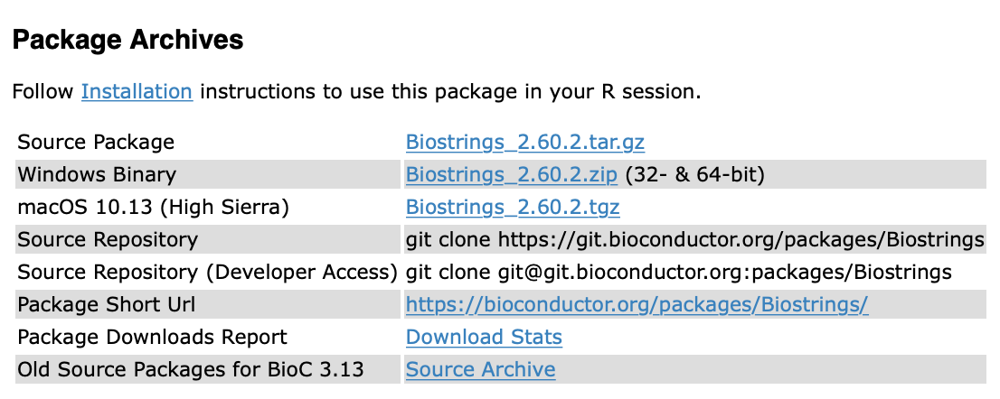

13 Instalación de paqueterías desde código fuente
Joselyn Chávez
11 de agosto de 2021
13.2 ¿A qué nos referimos con paqueterías de código fuente?
De forma usual, los paquetes que instalamos desde algún repositorio como CRAN o Bioconductor son paquetes binarios que ya se encuentran compilados previamente.
En algunas ocasiones necesitaremos instalar paquetes que no se encuentran compilados, por ejemplo:
- Paquetes en desarrollo de CRAN o Bioconductor.
- Versiones anteriores de paquetes de CRAN o Bioconductor.
- Paquetes que no se encuentran depositados en CRAN o Bioconductor, sino en repositorios personales como GitHub.
- Paquetes que estás desarrollando de forma local.
Existen algunas funciones que nos permiten instalar paquetes desde código fuente. Anteriormente, se solían utilizar las funciones install_* del paquete devtools; sin embargo, recientemente se creó el paquete remotes que contiene las mismas funciones pero está específicamente diseñado para ayudarnos a trabajar con paquetes desde código fuente.
13.3 ¿En dónde podemos encontrar el código fuente de un paquete?
Si el paquete se encuentra disponible en CRAN, puedes encontrar el link al código fuente en la sección URL.

Si el paquete se encuentra disponible en Bioconductor, puedes encontrar el link al código fuente en la sección Package Archives

Si el paquete se encuentra en GitHub o GitLab, necesitarás conocer el nombre de usuario del autor y el nombre del paquete que normalmente será también el nombre del repositorio a instalar.
13.4 Instalando la última versión en desarrollo
- Si el paquete se encuentra depositado en CRAN podemos usar la función
remotes::install_dev("pkgname")Por ejemplo, para instalar la versión en desarrollo de dplyr usaremos el comando
remotes::install_dev("dplyr") - Si el paquete se encuentra en Bioconductor usaremos la siguiente función:
remotes::install_bioc("pkgname")Por ejemplo, para instalar la versión en desarrollo de regutools, el paquete desarrollado por miembros de la CDSB, usaremos el comando
remotes::install_bioc("regutools")- Busca tu paquete favorito de CRAN o Bioconductor e instala su versión en desarrollo.
- ¿Recuerdas la función installed.packages()? Enlista tus paquetes instalados y explora la columna ‘Version’ del paquete que acabas de instalar. ¿Notas alguna diferencia?
13.5 Instalando paquetes desde GitHub
Independientemente de si el paquete se encuentra en CRAN, Bioconductor, o ninguno de ellos, podemos instalar un paquete depositado en una cuenta de GitHub.
Para poder instalar un paquete desde GitHub necesitaremos conocer el usuario del creador y el nombre del repositorio donde se encuentra depositado el paquete. Con esta información usaremos la siguiente función:
remotes::install_github("usuario/repositorio")Por ejemplo, para instalar el paquete starwarssay desarrollado por Erick Cuevas (Erickcufe) utilizaremos el siguiente comando:
remotes::install_github("Erickcufe/starwarssay")- El paquete datos contiene grupos de datos en español para usar dentro de R. Utiliza tu buscador (Google, por ejemplo) para encontrar la ubicación en GitHub de este paquete e instálalo.
- Verifica que se encuentre en tu lista de paquetes instalados y explora la información que te da la función installed.packages() sobre este paquete.
13.6 Instalando versiones anteriores
- Si el paquete se encuentra depositado en CRAN usaremos la función
remotes::install_version("pkgname",version = "version")Por ejemplo, para instalar la versión 1.0.0 de dplyr usaremos el comando
remotes::install_version("dplyr",version = "1.0.0")- Si el paquete se encuentra en Bioconductoor usaremos el paquete BiocManager
BiocManager::install(pkgs = "pkgname", version = "version")Por ejemplo, para instalar la versión 1.1.1 de regutools usaremos el comando
BiocManager::install(pkgs = "regutools", version = "1.1.1")13.7 Instalando un paquete local
Ya sea que hagas un fork y clone de un paquete o si tienes un paquete propio en desarrollo, esta función te ayudará a instalar el paquete de manera local.
remotes::install_local()Por ejemplo, vamos a generar un directorio temporal para instalar un paquete de prueba
dir <- tempfile()
dir.create(dir)Usaremos esta función para descargar el código fuente del paquete testthat en forma de directorio comprimido.
pkg <- download.packages("testthat", dir, type = "source")Al guardar los datos de la descarga en una variable, almacena la ubicación temporal donde se encuentra el archivo comprimido. Usaremos esta ruta para instalar el paquete desde su ubicación local.
remotes::install_local(pkg[, 2])Instalemos un paquete de forma local.
- Crea un directorio temporal para la descarga de este ejercicio o utiliza un directorio que puedas localizar fácilmente.
- Descarga el directorio comprimido del paquete palmerpenguins. Puedes usar la función que vimos anteriormente o buscar su link de descarga desde CRAN o GitHub.
- Instala el paquete desde tu ubicación local. Recuerda escribir la ruta donde descargaste el directorio comprimido.
- Verifica que el paquete se encuentre en tu lista de paquetes instalados y explora sus propiedades dentro de la tabla de paquetes.
Una ventaja de descargar el directorio completo de un paquete de forma local es que puedes realizar cambios al paquete, probar que funciona de manera local y después contribuir con código para el creador (haciendo un pull-request).
¿Recuerdas el paquete saludo que instalamos anteriormente desde el GitHub de la CDSB?
- Clona el repositorio en tu computadora usando el comando de git en tu terminal. Toma nota de la ruta donde lo estás descargando.
git clone https://github.com/ComunidadBioInfo/saludo.git- Instala el paquete desde su ubicación local
remotes::install_local("rutalocal")Por ejemplo, si lo clonaste en Descargas el comando se verá similar a
remotes::install_local("~/Downloads/saludo/")Agreguemos un mensaje de despedida aleatorio.
- Abre el proyecto del paquete saludo.
- Localiza la carpeta R.
- Dentro de la carpeta R, crea un nuevo script y escribe una función llamada despedida() que genere mensajes de despedida aleatorios. Puedes tomar como referencia el script que ya existe para la función saludo().
- Agrega la documentación necesaria.
- Ejecuta la función devtools::document() y después la función devtools::build() para compilar e instalar el paquete.
- Comprueba que puedes llamar a la función saludo::despedida() y que funciona correctamente.